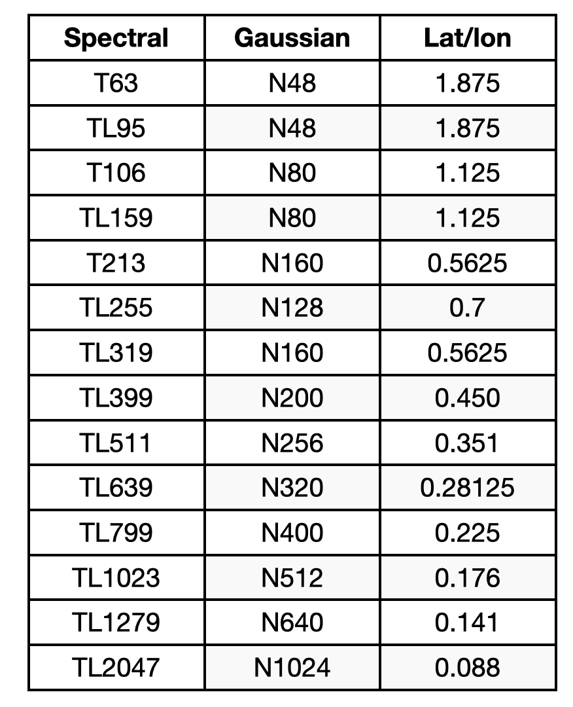
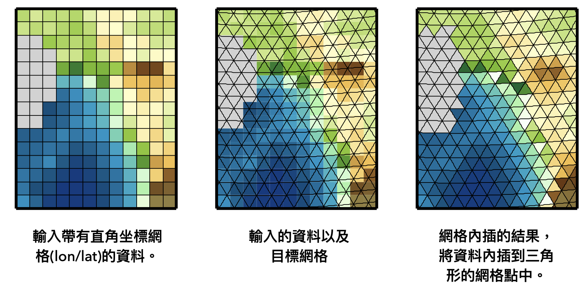

11. Climate Data Operator (CDO)#
Climate Data Operator (CDO) is a software developed by the Max-Planck Institute for Meteorology (MPI). It provides numerous operators to process standard climate data or model forecast outputs, including simple statistics, arithmetic operations, data slicing, and regridding functions. Initially, CDO could only be operated using the command line, but recently MPI has developed a Python version.
In this unit, we will focus on:
Selecting specific temporal, spatial, or vertical ranges of data, or selecting a specific variable.
Simple statistics.
Arithmetic operations.
Regridding.
Converting data formats.
For other functions and detail usages for each operator, see CDO User Guide (for command line useage) or pythob_cdo Introduction.
Fundamentals of cdo#
Linux Command Line Usage#
The usage to operate cdo in the Linux command line is as follows:
cdo [Options] Operator1 [-Operator2] [-OperatorN] infile outfile
For example, we get the result file outfile after applying OperatorN on infile. If we’d like to apply multiple operators, we can chain different operators using [-OperatorN]. The execution order is from [-OperatorN] to [-Operator2] to Operator1.
Usage in Python Script#
from cdo import *
cdo = Cdo()
The operators in the command line are equivalent to the methods of cdo.
Select Field#
We first demonstrate how to slice data with cdo. Before we look into the following example, you can try to read the CDO User Guide and find the solution first. Data selection is in Sec. 2.3.
Example 1: How to slice OLR data in December from 1998 to 2018?
We use the select operator in the command line and the .select() method in Python.
1. Command Line:
cdo select,year=1998/2018,month=12 data/olr.nc data/olr_1998-2018.12.nc
2. Python:
cdo.select('year=1998/2018,month=12', input='data/olr.nc', output='ex_out/olr_1998-2018.12.nc')
'ex_out/olr_1998-2018.12.nc'
The parameter 'year=1998/2018,month=12' means to select years ranging from 1998 to 2018 (Note that / means to select continuous years, whereas year=1998,2018 only selects two years) and December. The usage is very similar between the command line and Python. The output is a file in the above example. We can also ask cdo to return a DataArray instead of writing to a netCDF file, such as:
olr_sel = cdo.select('year=1998/2018,month=12', input='data/olr.nc', returnXArray='olr')
olr_sel
<xarray.DataArray 'olr' (time: 651, lat: 90, lon: 360)> Size: 84MB
[21092400 values with dtype=float32]
Coordinates:
* time (time) datetime64[ns] 5kB 1998-12-01 1998-12-02 ... 2018-12-31
* lon (lon) float32 1kB 0.5 1.5 2.5 3.5 4.5 ... 356.5 357.5 358.5 359.5
* lat (lat) float32 360B -44.5 -43.5 -42.5 -41.5 ... 41.5 42.5 43.5 44.5
Attributes:
standard_name: toa_outgoing_longwave_flux
long_name: NOAA Climate Data Record of Daily Mean Upward Longwave Fl...
units: W m-2
cell_methods: time: mean area: meanolr for returnXArray option is the name of the input variable.
Alternatively, we can select December first using cdo.selmon() as input and then chain with selyear.
cdo.selyear('1998/2018', input=cdo.selmon('12', input='data/olr.nc'),
returnXArray='olr')
<xarray.DataArray 'olr' (time: 651, lat: 90, lon: 360)> Size: 84MB
[21092400 values with dtype=float32]
Coordinates:
* time (time) datetime64[ns] 5kB 1998-12-01 1998-12-02 ... 2018-12-31
* lon (lon) float32 1kB 0.5 1.5 2.5 3.5 4.5 ... 356.5 357.5 358.5 359.5
* lat (lat) float32 360B -44.5 -43.5 -42.5 -41.5 ... 41.5 42.5 43.5 44.5
Attributes:
standard_name: toa_outgoing_longwave_flux
long_name: NOAA Climate Data Record of Daily Mean Upward Longwave Fl...
units: W m-2
cell_methods: time: mean area: meanWe can also pass a DataArray for input. The above code an be also written as
olr_dec = cdo.selmon('12',input='data/olr.nc',returnXArray='olr')
olr_sel = cdo.selyear('1998/2018', input=olr_dec, returnXArray='olr')
olr_sel
<xarray.DataArray 'olr' (time: 651, lat: 90, lon: 360)> Size: 84MB
[21092400 values with dtype=float32]
Coordinates:
* time (time) datetime64[ns] 5kB 1998-12-01 1998-12-02 ... 2018-12-31
* lon (lon) float32 1kB 0.5 1.5 2.5 3.5 4.5 ... 356.5 357.5 358.5 359.5
* lat (lat) float32 360B -44.5 -43.5 -42.5 -41.5 ... 41.5 42.5 43.5 44.5
Attributes:
standard_name: toa_outgoing_longwave_flux
long_name: NOAA Climate Data Record of Daily Mean Upward Longwave Fl...
units: W m-2
cell_methods: time: mean area: meanIf we like to output the result to a Dataset, set returnXDataset instead of returnXArray.
Example 2 Select Field and Operator Chaining: Merge NCEP R2 850-hPa wind field along time dimension, then select NDJ season data.
1. Command Line:
cdo select,month=1,11,12 -mergetime data/ncep_r2_uv850/u850.*.nc data/ncep_r2_u850_ndj.nc
2 Python:
cdo.select('month=1,11,12',
input=cdo.mergetime(input='data/ncep_r2_uv850/u850.*.nc'),
returnXArray='uwnd')
<xarray.DataArray 'uwnd' (time: 2208, level: 1, lat: 73, lon: 144)> Size: 93MB
[23210496 values with dtype=float32]
Coordinates:
* time (time) datetime64[ns] 18kB 1998-01-01 1998-01-02 ... 2021-12-31
* lon (lon) float32 576B 0.0 2.5 5.0 7.5 10.0 ... 350.0 352.5 355.0 357.5
* lat (lat) float32 292B 90.0 87.5 85.0 82.5 ... -82.5 -85.0 -87.5 -90.0
* level (level) float32 4B 850.0
Attributes: (12/14)
standard_name: eastward_wind
long_name: Daily U-wind on Pressure Levels
units: m/s
unpacked_valid_range: [-140. 175.]
actual_range: [-78.96 110.35]
precision: 2
... ...
var_desc: u-wind
dataset: NCEP/DOE AMIP-II Reanalysis (Reanalysis-2) Daily A...
level_desc: Pressure Levels
statistic: Mean
parent_stat: Individual Obs
cell_methods: time: mean (of 4 6-hourly values in one day)The cdo.select() method is used to select data for the months January, November, and December ('month=1,11,12'). This selection is applied to the data that is first merged along the time dimension using cdo.mergetime(). The merged data is specified as the input to the cdo.select() method.
Note
mergetime: Merges all timesteps of all input files sorted by date and time. All input files need to have the same structure with the same variables on different timesteps. After this operation every input timestep is in outfile and all timesteps are sorted by date and time.cat: Concatenates all input datasets and appends the result to the end of outfile.
Warning
If the file size is too large (because of, for example, the high resolution), the system may overload if we operate the above command. Therefore, we can use a for loop to select the month and output the byproduct, and then merge them.
Example 3 Select a specific domain: use the sellonlatbox method to slice over the 40˚-180˚E, 20˚S-30˚N domain.
1. Command Line:
cdo sellonlatbox,40,180,-20,30 data/olr.nc olr_selbox.nc
2. Python:
cdo.sellonlatbox('40,180,-20,30',
input='data/olr.nc',
returnXArray='olr')
<xarray.DataArray 'olr' (time: 8760, lat: 50, lon: 140)> Size: 245MB
[61320000 values with dtype=float32]
Coordinates:
* time (time) datetime64[ns] 70kB 1998-01-01 1998-01-02 ... 2021-12-31
* lon (lon) float32 560B 40.5 41.5 42.5 43.5 ... 176.5 177.5 178.5 179.5
* lat (lat) float32 200B -19.5 -18.5 -17.5 -16.5 ... 26.5 27.5 28.5 29.5
Attributes:
standard_name: toa_outgoing_longwave_flux
long_name: NOAA Climate Data Record of Daily Mean Upward Longwave Fl...
units: W m-2
cell_methods: time: mean area: meanStatistics#
The detailed usage of statistical methods such as sum, mean, avg, var, std, weighted avg, etc., can be found in Section 2.8 of the User Guide.
Note
What’s different between mean and avg? To distinguish two different kinds of treatment of missing values:
mean: only the not missing values are considered to belong to the sample with the side effect of a probably reduced sample size.avg: just adding the sample members and divide the result by the sample size.E.g.: the mean of 1, 2, miss and 3 is (1+2+3)/3 = 2, whereas the average is (1+2+miss+3)/4 = miss/4 = miss. If there are no missing values in the sample, the average and the mean are identical.
Example 4: Calculate mean OLR in December 1998-2018.
1. Command Line:
cdo timmean -select,year=1998/2018,month=12 data/olr.nc olr_dec_ltm.nc
2. Python:
cdo.timmean(input=cdo.select('year=1998/2018,month=12', input='data/olr.nc'),
returnXArray='olr')
<xarray.DataArray 'olr' (time: 1, lat: 90, lon: 360)> Size: 130kB
[32400 values with dtype=float32]
Coordinates:
* time (time) datetime64[ns] 8B 2008-12-16
* lon (lon) float32 1kB 0.5 1.5 2.5 3.5 4.5 ... 356.5 357.5 358.5 359.5
* lat (lat) float32 360B -44.5 -43.5 -42.5 -41.5 ... 41.5 42.5 43.5 44.5
Attributes:
standard_name: toa_outgoing_longwave_flux
long_name: NOAA Climate Data Record of Daily Mean Upward Longwave Fl...
units: W m-2
cell_methods: time: mean area: meanNote
The time coordinate “2008-12-16” is simply the “averaged time” of the entire period.
Example 5: Calculate daily climatology. Calculate daily climatology of olr.nc.
1. Command Line:
cdo ydaymean data/olr.nc data/olr_dayClim.nc
2.Python:
cdo.ydaymean(input='data/olr.nc', returnXArray='olr')
<xarray.DataArray 'olr' (time: 365, lat: 90, lon: 360)> Size: 47MB
[11826000 values with dtype=float32]
Coordinates:
* time (time) datetime64[ns] 3kB 2021-01-01 2021-01-02 ... 2021-12-31
* lon (lon) float32 1kB 0.5 1.5 2.5 3.5 4.5 ... 356.5 357.5 358.5 359.5
* lat (lat) float32 360B -44.5 -43.5 -42.5 -41.5 ... 41.5 42.5 43.5 44.5
Attributes:
standard_name: toa_outgoing_longwave_flux
long_name: NOAA Climate Data Record of Daily Mean Upward Longwave Fl...
units: W m-2
cell_methods: time: mean area: meanArithmetics#
Arithmetics operators in cdo is EXPR. It includes assignment =, plus (x+y), minus (x-y), mulplication (x*y), devision (x/y), absolute values abs(x), squared root sqr(x), exponential exp(x), etc.
Example 6: The unit of mean sea level pressure (MSLP) in NCEP R2 data is Pa. Convert to hPa.
1. Command Line:
cdo expr,'mslp=mslp/100' mslp.2021.nc mslp.hpa.2021.nc
2. Python:
mslp_hPa = cdo.expr('mslp=mslp/100.',
input='data/mslp.2021.nc',
returnXArray='mslp')
mslp_hPa = mslp_hPa.assign_attrs(units='hPa') # Change attribute.
mslp_hPa
<xarray.DataArray 'mslp' (time: 365, lat: 73, lon: 144)> Size: 15MB
[3836880 values with dtype=float32]
Coordinates:
* time (time) datetime64[ns] 3kB 2021-01-01 2021-01-02 ... 2021-12-31
* lon (lon) float32 576B 0.0 2.5 5.0 7.5 10.0 ... 350.0 352.5 355.0 357.5
* lat (lat) float32 292B 90.0 87.5 85.0 82.5 ... -82.5 -85.0 -87.5 -90.0
Attributes:
standard_name: pressure
long_name: daily mean 6-Hourly Mean Sea Level Pressure
units: hPaRegrid#
When we compare or analyze two datasets with different grid resolutions, or when we’d like to speed up computations or save RAM by coarsening the grid resolution, or when addressing model outputs, we may need to regrid the dataset. The regrid operator in CDO can handle spherical harmonics grids, Gaussian grids, or longitude/latitude grids. The corresponding resolution between these coordinate systems is summarized in the table.

Bilinear Interpolation to the Standard Coordinate System#
remapbil: Bilinear interpolation is the most commonly used regridding method.

1. Command Line:
cdo remapbil,n32 data/olr.nc data/olr.n32.nc
2. Python:
cdo.remapbil('n32', input='data/olr.nc', returnXArray='olr')
<xarray.DataArray 'olr' (time: 8760, lat: 64, lon: 128)> Size: 287MB
[71761920 values with dtype=float32]
Coordinates:
* time (time) datetime64[ns] 70kB 1998-01-01 1998-01-02 ... 2021-12-31
* lon (lon) float64 1kB 0.0 2.812 5.625 8.438 ... 348.8 351.6 354.4 357.2
* lat (lat) float64 512B 87.86 85.1 82.31 79.53 ... -82.31 -85.1 -87.86
Attributes:
standard_name: toa_outgoing_longwave_flux
long_name: NOAA Climate Data Record of Daily Mean Upward Longwave...
units: W m-2
CDI_grid_type: gaussian
CDI_grid_num_LPE: 32
cell_methods: time: mean area: meanFirst-order Conservative Remapping#
As mentioned in Unit 7, rainfall need to stay mass conservation after regridding, therefore conservative regridding is required. The cdo operator for this remapping method is remapcon.
1. Command Line:
cdo remapcon,n32 cmorph_sample.nc cmorph_n32.nc
2. Python:
cdo.remapcon('n32',input='data/cmorph_sample.nc',returnXArray='cmorph')
---------------------------------------------------------------------------
KeyboardInterrupt Traceback (most recent call last)
Cell In[12], line 1
----> 1 cdo.remapcon('n32',input='data/cmorph_sample.nc',returnXArray='cmorph')
File /data/wtsai/micromamba/p3/lib/python3.10/site-packages/cdo/cdo.py:515, in Cdo.__call__(self, *args, **kwargs)
511 outputs.append(self.tempStore.newFile())
513 cmd.append(' '.join(outputs))
--> 515 retvals = self.__call(cmd, envOfCall)
516 if self.__hasError(method_name, cmd, retvals):
517 if self.returnNoneOnError:
File /data/wtsai/micromamba/p3/lib/python3.10/site-packages/cdo/cdo.py:334, in Cdo.__call(self, cmd, envOfCall)
326 env.update(envOfCall)
328 proc = subprocess.Popen(' '.join(cmd),
329 shell=True,
330 stderr=subprocess.PIPE,
331 stdout=subprocess.PIPE,
332 env=env)
--> 334 retvals = proc.communicate()
335 stdout = retvals[0].decode("utf-8")
336 stderr = retvals[1].decode("utf-8")
File /data/wtsai/micromamba/p3/lib/python3.10/subprocess.py:1154, in Popen.communicate(self, input, timeout)
1151 endtime = None
1153 try:
-> 1154 stdout, stderr = self._communicate(input, endtime, timeout)
1155 except KeyboardInterrupt:
1156 # https://bugs.python.org/issue25942
1157 # See the detailed comment in .wait().
1158 if timeout is not None:
File /data/wtsai/micromamba/p3/lib/python3.10/subprocess.py:2021, in Popen._communicate(self, input, endtime, orig_timeout)
2014 self._check_timeout(endtime, orig_timeout,
2015 stdout, stderr,
2016 skip_check_and_raise=True)
2017 raise RuntimeError( # Impossible :)
2018 '_check_timeout(..., skip_check_and_raise=True) '
2019 'failed to raise TimeoutExpired.')
-> 2021 ready = selector.select(timeout)
2022 self._check_timeout(endtime, orig_timeout, stdout, stderr)
2024 # XXX Rewrite these to use non-blocking I/O on the file
2025 # objects; they are no longer using C stdio!
File /data/wtsai/micromamba/p3/lib/python3.10/selectors.py:416, in _PollLikeSelector.select(self, timeout)
414 ready = []
415 try:
--> 416 fd_event_list = self._selector.poll(timeout)
417 except InterruptedError:
418 return ready
File /data/wtsai/micromamba/p3/lib/python3.10/site-packages/cdo/cdo.py:835, in CdoTempfileStore.__catch__(self, signum, frame, throw, **kwargs)
833 self.__del__()
834 if callable(throw):
--> 835 throw(signum, frame, **kwargs)
836 else:
837 print("caught signal", signum, frame)
KeyboardInterrupt:
Remap to Any Grid Type#
We first need to create a grid description file. For example, if the target grid system is the NCEP R2 grid system, the grid description file should include:
gridtype = lonlat
xsize = 69
ysize = 17
xfirst = 40
xinc = 2.5
yfirst = -20
yinc = 2.5
The file contains the grid type, number of grids, and starting point. Save the description file in the current folder and name it, for example, ncep_r2_grid, so that we can remap the file to this system.
Example 7: Regrid CMORPH data (0.25˚ resolution) onto the NCEP R2 grid with the first-order conservation mapping method.
1. Command Line:
cdo remapcon,ncep_r2_grid data/cmorph_sample.nc data/cmorph_remap.nc
2. Python:
cdo.remapcon('ncep_r2_grid', input='data/cmorph_sample.nc', returnXArray='cmorph')
<xarray.DataArray 'cmorph' (time: 8766, lat: 17, lon: 69)> Size: 41MB
[10282518 values with dtype=float32]
Coordinates:
* time (time) datetime64[ns] 70kB 1998-01-01 1998-01-02 ... 2021-12-31
* lon (lon) float64 552B 40.0 42.5 45.0 47.5 ... 202.5 205.0 207.5 210.0
* lat (lat) float64 136B -20.0 -17.5 -15.0 -12.5 ... 12.5 15.0 17.5 20.0
Attributes:
standard_name: lwe_precipitation_rate
long_name: precipitation
units: mm/day
ver_note: 1998-2020: V1,0; 2021: V0.x.
comment: !!! CMORPH estimate is rainrate !!!Since I don’t provide global CMORPH precipitation data as a sample file, the ncep_r2_grid file is not global either. For global data, the grid description file should be:
gridtype = lonlat
xsize = 144
ysize = 73
xfirst = 0
xinc = 2.5
yfirst = -90
yinc = 2.5
File Output Format#
The default output format in CDO is netCDF. We can change it using the option -f <format>. Following are the accepted formats.

1. Command Line:
cdo -f grb2 copy data/olr.nc data/olr.grb2
cdo.copy(option='-f grb2',
input='data/olr.nc',
output='ex_out/olr.grib2')
'ex_out/olr.grib2'
Binary Files#
Some files are saved in binary format. A binary file doesn’t contain grid information. However, a control file .ctl is attached to help users understand how to read such files. Binary format is commonly used by GrADS. We can convert a binary file with a .ctl file to a netCDF file.
Below is the format of a .ctl file.
DSET infile.bin
OPTIONS sequential
UNDEF − 9 e + 3 3
XDEF 360 LINEAR −179.5 1
YDEF 180 LINEAR −89.5 1
ZDEF LINEAR 1 1
TDEF 1 LINEAR 00:00 Z15jun1989 12hr
VARS 1
param 1 99 description of the variable
ENDVARS
1. Command Line:
cdo -f nc import_binary infile.ctl outfile.nc
2. Python:
cdo.import_binary(input='infile.ctl', output='outfile.nc', option='-f nc')
Delete Temporary Files#
cdo.cleanTempDir()